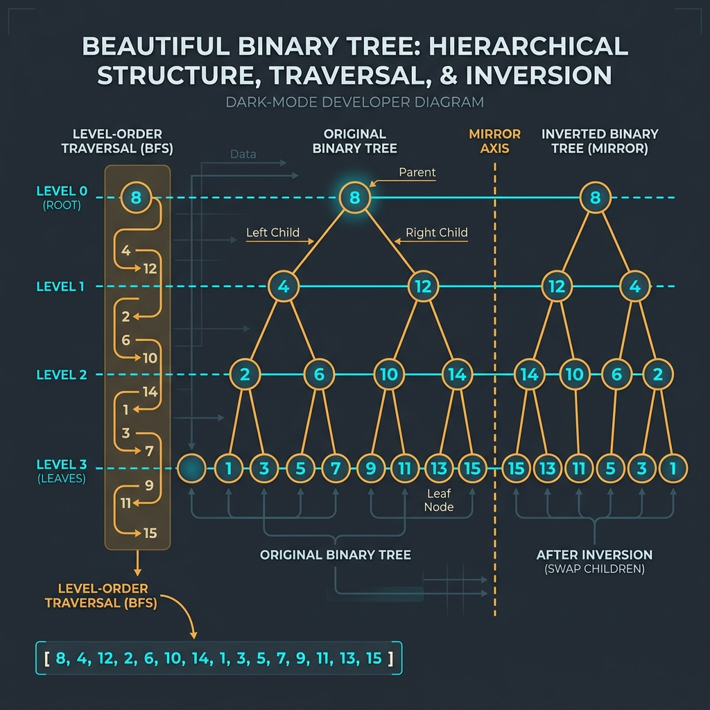

Introduction & Problem Explanation
The Level Order Traversal problem (also known as Breadth-First Search on a tree) requires us to traverse a binary tree level-by-level, from left to right, returning a list of list of integers representing the values of nodes at each height level.
For example, if the input tree is:
3
/ \
9 20
/ \
15 7
The output list of lists should be: [[3], [9, 20], [15, 7]]. This traversal is essential for hierarchical structure processing, network packet broadcasting, and calculating the minimum depth of a tree.

Imagine you are cataloging a family tree. Instead of following a single branch down to the modern day (Depth-First Search), you want to write down family members generation-by-generation. First, you record the grandparents (Level 0). Next, you record all of their children (Level 1). Finally, you record all of the grandchildren (Level 2). To do this in an orderly fashion, you set up a waiting line (Queue). You call in one generation, note down their names, and as you do so, you ask them to send their children to wait at the back of the line. This ensures nobody gets mixed up between generations!
The Algorithmic Approach
1. Breadth-First Search (BFS) using a Queue (O(n) Time, O(n) Space)
A standard queue (FIFO - First In, First Out) is perfect for BFS. To separate the levels:
- We initialize a queue and add the root node.
- While the queue is not empty, we read its size:
int levelSize = queue.size(). This tells us exactly how many nodes are at the current level. - We loop
levelSizetimes to dequeue these nodes, add their values to a list representing the current level, and enqueue their non-null left and right children. - Once the inner loop finishes, we add the level list to our main results list.
O(n) time since we visit every node exactly once. The space complexity is O(w) (where w is the maximum width of the tree) to hold queue elements.
Step-by-Step Execution Walkthrough
Let's trace the level order traversal on the tree: 3 (root), left 9, right 20 (with children 15 and 7):
- Step 1 (Initialization):
- Create result list
res = []. - Initialize queue and add root:
queue = [3].
- Create result list
- Step 2 (Level 0):
- The queue size is
1. We process 1 node. - Dequeue node
3. Add value3to level list:level = [3]. - Enqueue children of 3: left child
9and right child20. - Queue is now:
[9, 20]. Add level to results:res = [[3]].
- The queue size is
- Step 3 (Level 1):
- The queue size is
2. We must process exactly 2 nodes (node9and node20). - Dequeue node
9. Add value9to level list:level = [9]. Node 9 has no children. - Dequeue node
20. Add value20to level list:level = [9, 20]. - Enqueue children of 20: left child
15and right child7. - Queue is now:
[15, 7]. Add level to results:res = [[3], [9, 20]].
- The queue size is
- Step 4 (Level 2):
- The queue size is
2. We process 2 nodes (node15and node7). - Dequeue node
15. Add to level:level = [15]. No children. - Dequeue node
7. Add to level:level = [15, 7]. No children. - Queue is now empty:
[]. Add level to results:res = [[3], [9, 20], [15, 7]].
- The queue size is
- Step 5 (Completion): The queue is empty, so the loop ends. The method returns
res:[[3], [9, 20], [15, 7]].
Key Code Snippets & Explanations
Here is why the main logic in the solution is important:
int size = queue.size();: Captures the number of elements at the current level. Crucial because it prevents child nodes added during iteration from being processed in the current level's list.queue.offer(root);: Adds the starting element to the queue.if (curr.left != null) queue.offer(curr.left);: Conditionally adds child nodes to the queue to be processed at the next generation level.
Java Implementation Code
Below is the complete, self-contained Java source code that solves this problem. It also includes a main method that traces the execution with console outputs.
package io.practise.dsa;
import java.util.*;
public class LevelOrderTraversal {
public static class TreeNode {
public int val;
public TreeNode left, right;
public TreeNode(int val) { this.val = val; }
}
// BFS Using Queue - O(n)
public List<List<Integer>> levelOrder(TreeNode root) {
List<List<Integer>> result = new ArrayList<>();
if (root == null) return result;
Queue<TreeNode> queue = new LinkedList<>();
queue.offer(root);
while (!queue.isEmpty()) {
int size = queue.size();
List<Integer> level = new ArrayList<>();
for (int i = 0; i < size; i++) {
TreeNode curr = queue.poll();
level.add(curr.val);
if (curr.left != null) queue.offer(curr.left);
if (curr.right != null) queue.offer(curr.right);
}
result.add(level);
}
return result;
}
public static void main(String[] args) {
LevelOrderTraversal solver = new LevelOrderTraversal();
TreeNode root = new TreeNode(3);
root.left = new TreeNode(9);
root.right = new TreeNode(20);
root.right.left = new TreeNode(15);
root.right.right = new TreeNode(7);
System.out.println("--- Level Order Traversal Demonstration ---");
List<List<Integer>> result = solver.levelOrder(root);
System.out.println("Levels: " + result);
}
}
Conclusion
Solving the Level Order Traversal problem highlights how we can leverage key data structures and algorithmic paradigms (like two pointers, hash maps, or dynamic programming) to significantly optimize runtime and simplify code complexity.